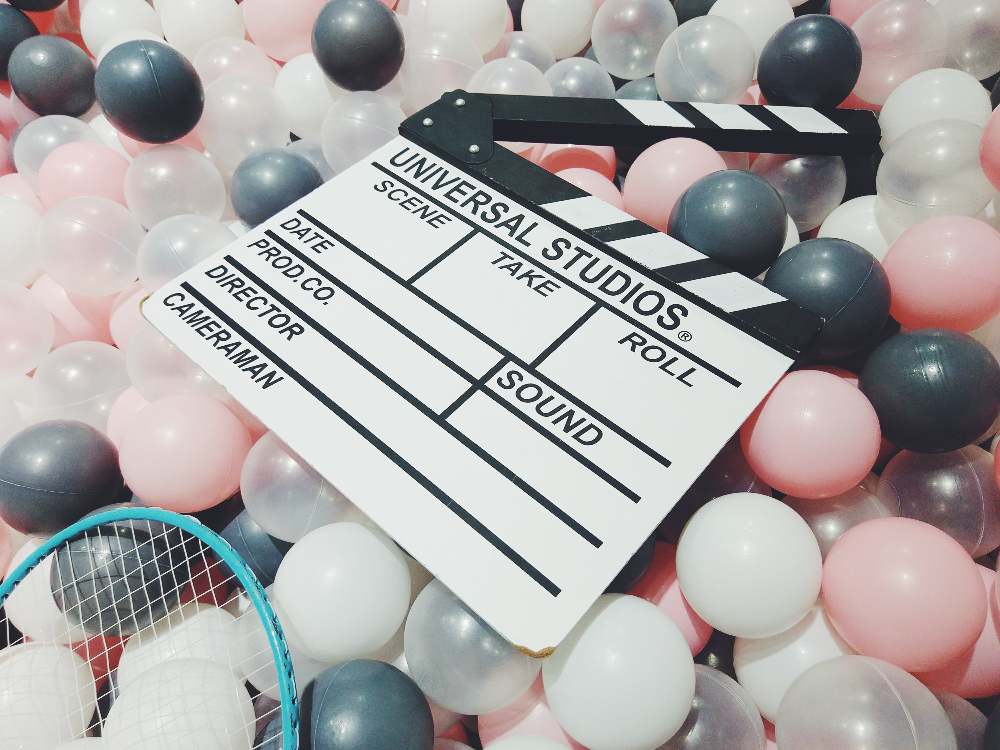

I love movies. because movies make me feel lifefull and sometimes it motivate me for escape depressing. Movies have a lot of genre such as action, romance, comedy, drama, thriller and so on. 
Among them i like most action genre because of its unreality. It makes me feel comfortable and active. When i see action movies, i think be the host of the movie. Actually not, that feeling make me relax. While watching movies, reality in my life is vanished.